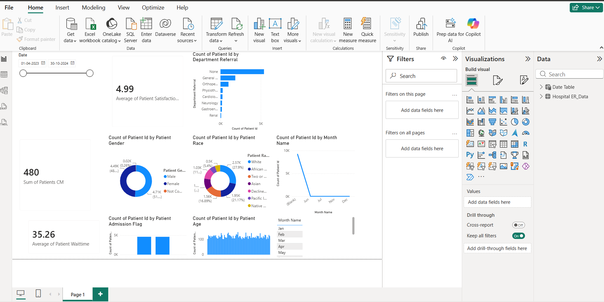

Aspiring Data Analyst with skills in SQL, Power BI, Excel, Python and Data Visualization. Passionate about transforming raw data into meaningful insights and building interactive dashboards for business decision-making.
B.Tech in Electrical Engineering
2022 - 2026
Developed a grid-connected inverter system using an Artificial Neural Network (ANN) optimized with AI techniques to improve power quality, voltage regulation and harmonic reduction in renewable energy integration.
Skills: Artificial Neural Networks (ANN), MATLAB, Power Electronics, Renewable Energy Systems, Data Analysis
Performed retail sales analysis using SQL queries to identify sales trends, customer patterns and business insights.
Skills: SQL, MySQL, Data Analysis
Created an interactive Power BI dashboard to analyze hospital patient data, satisfaction, waiting time and demographic trends.
Skills: Power BI, Data Visualization, Excel, Data Analysis

Tata — Forage
Microsoft Learn
Deloitte — Forage
Deloitte — Forage
IIIT Allahabad
Email:aksharaupadhyay08@gmail.com
LinkedIn: View LinkedIn
GitHub: View GitHub